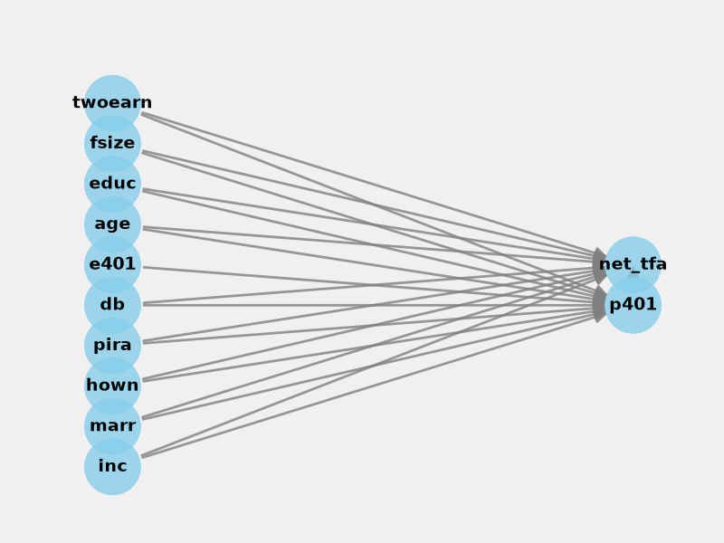

Causal inference · household finance
Inférence causale · finances des ménages
Does 401(k) eligibility increase household financial wealth?
L'éligibilité au 401(k) augmente-t-elle la richesse financière des ménages ?
We study whether access to an employer-sponsored retirement plan causes households to accumulate more net financial assets, while accounting for confounding factors like income, age, education, and family structure.
Nous examinons si l'accès à un plan de retraite offert par l'employeur incite les ménages à accumuler davantage d'actifs financiers nets, tout en tenant compte de facteurs de confusion tels que le revenu, l'âge, l'éducation et la structure familiale.
Summary snapshot
Aperçu synthétique
$18,051
Average net financial assets across the sample
Valeur moyenne des actifs financiers nets dans l'échantillon
Eligible households hold roughly +$19,559 more in net financial assets on average.
Les ménages éligibles détiennent en moyenne environ +$19 559 de plus en actifs financiers nets.
Causal design
Conception causale
Why a simple comparison is misleading
Pourquoi une simple comparaison est trompeuse
Workers with access to a 401(k) are not random: they often have higher income, more education, different household structure, and a stronger financial profile. Those same characteristics also influence wealth accumulation.
Les travailleurs ayant accès à un 401(k) ne sont pas choisis au hasard : ils ont souvent un revenu plus élevé, plus d'études, une structure familiale différente et un profil financier plus solide. Ces mêmes caractéristiques influencent aussi l'accumulation de richesse.
Income
Revenu
Education
Éducation
Age
Âge
Family size
Taille du ménage
Home ownership
Propriété du logement
Pension status
Statut de pension

Methodology
Méthodologie
Research pipeline
Pipeline de recherche
01
Data exploration
Exploration des données
Inspect distribution, missingness, and baseline differences by eligibility status.
Étudier la distribution, les valeurs manquantes et les différences de base selon le statut d'éligibilité.
02
Model estimation
Estimation du modèle
Estimate the treatment effect using flexible causal models and machine learning methods.
Estimer l'effet du traitement à l'aide de modèles causals flexibles et de méthodes d'apprentissage automatique.
03
Identification
Identification
Control for confounders under the assumption that, conditional on observables, eligibility is as good as random.
Contrôler les facteurs de confusion en supposant que, conditionnellement aux variables observées, l'éligibilité est comparable à un tirage aléatoire.
04
Refutation
Réfutation
Check robustness and sensitivity so the estimate is not driven by a single misspecified model.
Vérifier la robustesse et la sensibilité pour éviter qu'une estimation soit guidée par un seul modèle mal spécifié.
Interpretation
Interprétation
Key project takeaways
Points clés du projet
Positive treatment signal
Signal positif du traitement
The raw comparison already shows a strong positive association between 401(k) eligibility and net financial assets.
La comparaison brute montre déjà une forte association positive entre l'éligibilité au 401(k) et les actifs financiers nets.
Confounding matters
Les facteurs de confusion comptent
Income and education are important drivers of both eligibility and wealth, so a naive comparison would overstate the effect.
Le revenu et l'éducation sont des moteurs importants de l'éligibilité et de la richesse, de sorte qu'une comparaison naïve surestimerait l'effet.
Research conclusion
Conclusion de recherche
After adjusting for observed confounders, the evidence supports the hypothesis that 401(k) eligibility increases household financial wealth, while remaining attentive to identification assumptions.
Après ajustement pour les facteurs de confusion observés, les données soutiennent l'hypothèse selon laquelle l'éligibilité au 401(k) augmente la richesse financière des ménages, tout en restant attentive aux hypothèses d'identification.